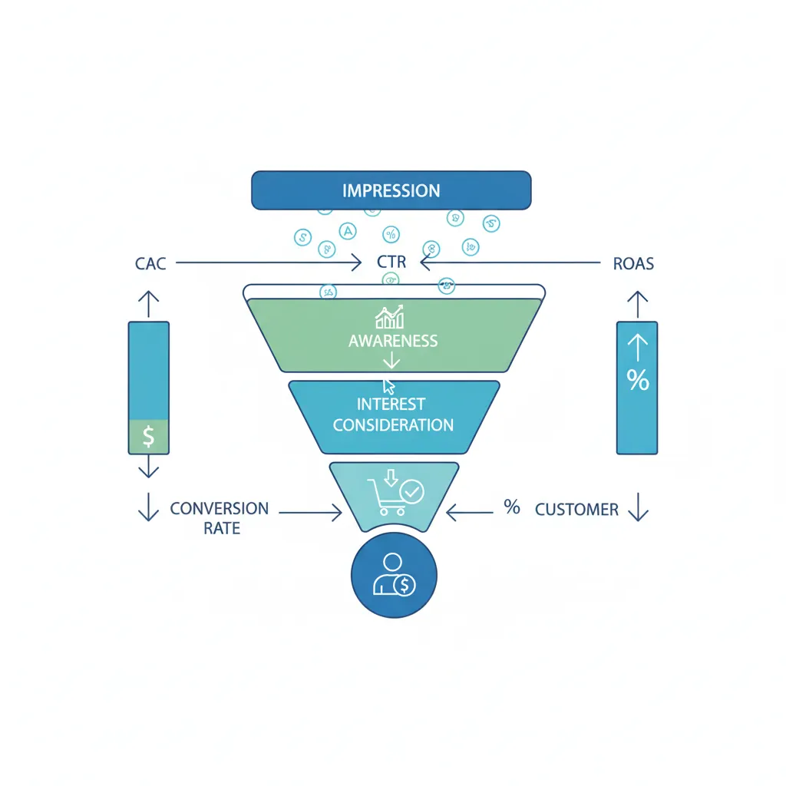
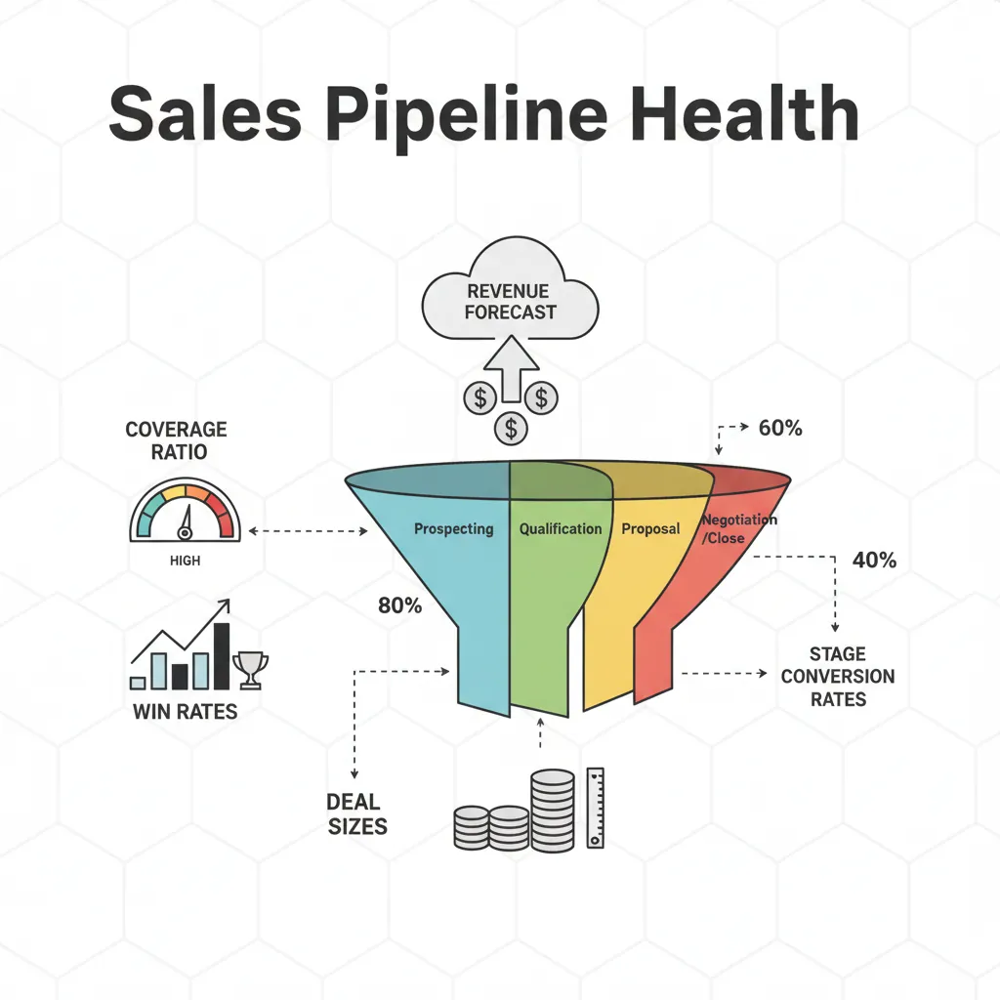
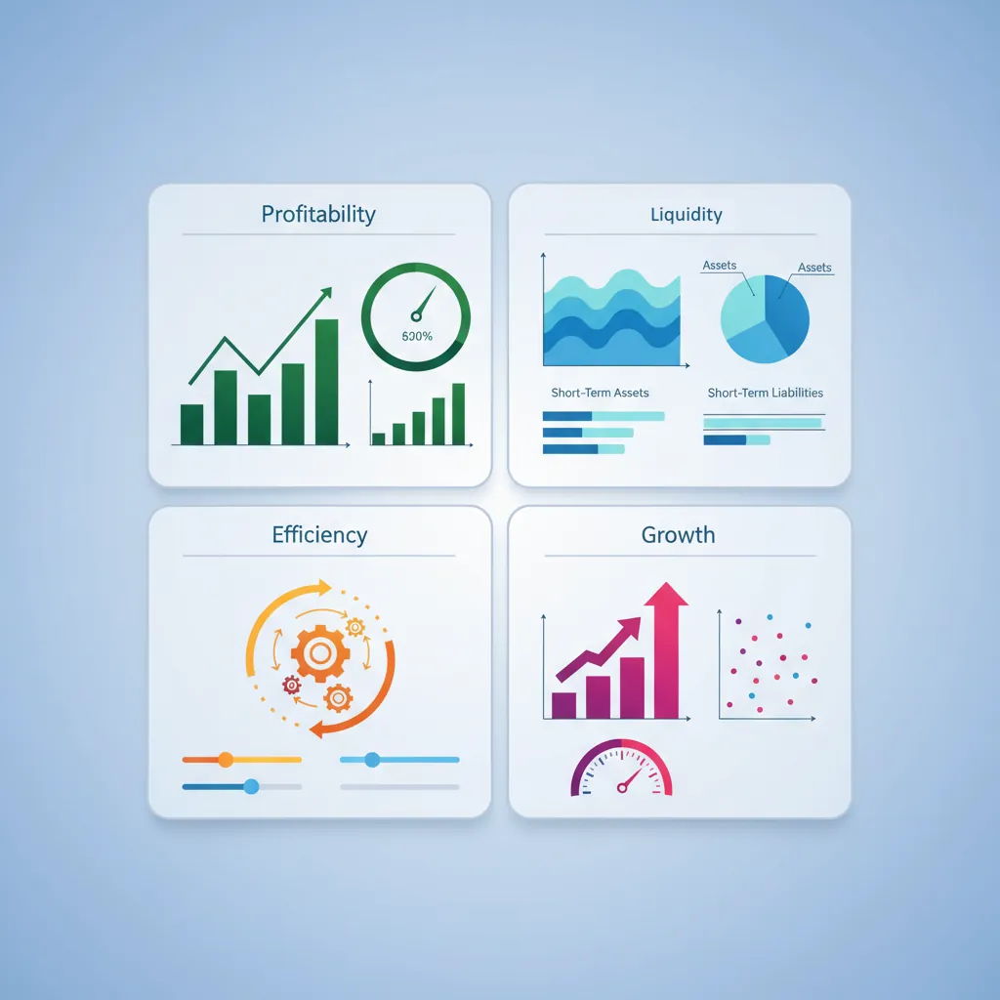
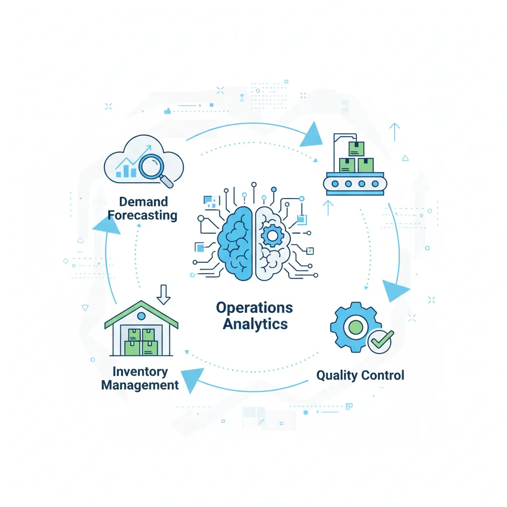

1. Introduction
Different business functions have unique data needs, KPIs, and decision types. This guide covers how data-driven decision making applies to each major function.
Data-Driven Decisions
Introduction to Business Analytics & DDDM
Analytics maturity, data-driven culture, business valueDefining & Tracking KPIs
OKRs, leading/lagging indicators, scorecard designDashboard Design & BI Tools
Tableau, Power BI, dashboard best practices, data vizExperimentation & A/B Testing
Hypothesis testing, control groups, sample sizingStatistical Significance & Interpretation
P-values, confidence intervals, effect size, power analysisDecision Frameworks & Structured Decision Making
Decision matrices, Bayesian thinking, risk analysisData Collection & Quality Management
Surveys, ETL, data governance, cleaning pipelinesBusiness Storytelling & Visualization
Narrative structure, chart selection, audience designPredictive Analytics & Forecasting
Regression, time series, ML models, forecasting methodsData-Driven Culture & Organizational Adoption
Change management, data literacy, organizational buy-inFunction-Specific Data Applications
Marketing, finance, operations, HR analyticsCapstone Projects (Portfolio-Ready)
End-to-end analytics projects, portfolio buildingAdvanced Analytics & Automation
ML pipelines, AutoML, real-time analytics, AI integrationCross-Functional Analytics
While each function has specialized metrics, many insights come from connecting data across functions:
- Marketing ↔ Sales: Lead quality, marketing attribution
- Sales ↔ Finance: Revenue forecasting, deal profitability
- Product ↔ Customer Success: Feature adoption, churn drivers
- HR ↔ Operations: Workforce planning, productivity
2. Marketing Analytics
Marketing analytics measures the effectiveness of campaigns and channels to optimize spend and growth.

Marketing KPIs
| Metric | Formula | Benchmark |
|---|---|---|
| CAC (Customer Acquisition Cost) | Marketing Spend ÷ New Customers | Varies; CAC:LTV ratio < 1:3 |
| ROAS (Return on Ad Spend) | Revenue from Ads ÷ Ad Spend | >4x for profitable campaigns |
| CTR (Click-Through Rate) | Clicks ÷ Impressions | 2-5% for search ads |
| Conversion Rate | Conversions ÷ Visitors | 2-5% for e-commerce |
| MQL/SQL Ratio | Sales Qualified Leads ÷ Marketing Qualified Leads | 30-50% |
Attribution Modeling
Which touchpoints get credit for a conversion?
- Last-touch: 100% credit to final touchpoint (simple but misleading)
- First-touch: 100% credit to first touchpoint
- Linear: Equal credit across all touchpoints
- Time-decay: More credit to touchpoints closer to conversion
- Data-driven (ML): Algorithmic attribution based on actual impact
Campaign Optimization
- A/B test ad creative, copy, landing pages
- Optimize for CAC rather than just volume
- Segment performance by channel, audience, geography
- Use cohort analysis to track long-term value
3. Sales Analytics
Sales analytics focuses on pipeline health, forecasting, and rep productivity.

Pipeline Analysis
| Metric | What It Tells You |
|---|---|
| Pipeline Coverage | Pipeline value ÷ Quota (target: 3-4x) |
| Win Rate | Deals won ÷ Total deals |
| Average Deal Size | Revenue ÷ Deals closed |
| Sales Cycle Length | Days from lead to close |
| Stage Conversion Rates | % advancing from each pipeline stage |
Sales Forecasting
- Weighted pipeline: Sum of (deal value × probability by stage)
- Historical run rate: Past performance extrapolated
- Rep-level rollup: Each rep's committed/best-case/worst-case
- ML models: Predict close probability from deal attributes
Territory Planning
Balance workload and opportunity across territories:
- Equal revenue potential per rep
- Geographic efficiency (minimize travel)
- Account load balancing
- Growth potential vs. current revenue
4. Finance Analytics
Finance analytics supports planning, reporting, and risk management.

Financial KPIs
| Category | Key Metrics |
|---|---|
| Profitability | Gross Margin, Operating Margin, Net Margin, EBITDA |
| Liquidity | Current Ratio, Quick Ratio, Cash Conversion Cycle |
| Efficiency | Revenue per Employee, Asset Turnover |
| Growth | Revenue Growth Rate, ARR Growth (SaaS), Net Revenue Retention |
Budgeting & Planning
- Top-down: Leadership sets targets, cascades down
- Bottom-up: Teams build budgets, roll up
- Driver-based: Model from key drivers (headcount, deals, etc.)
- Rolling forecasts: Continuous re-forecasting (vs. annual budget)
Risk Analysis
- Scenario planning: Best case, base case, worst case
- Sensitivity analysis: Impact of changing one variable
- Monte Carlo simulation: Probability distributions for outcomes
5. Operations Analytics
Operations analytics optimizes efficiency, quality, and cost.

Supply Chain Analytics
- Demand forecasting: Predict what customers will order
- Inventory optimization: Balance stockouts vs. holding costs
- Supplier performance: On-time delivery, quality, cost
- Lead time analysis: Time from order to delivery
Quality Metrics
| Metric | Description |
|---|---|
| Defect Rate | Defects per unit produced |
| First Pass Yield | % of units passing without rework |
| OEE (Overall Equipment Effectiveness) | Availability × Performance × Quality |
| MTBF/MTTR | Mean Time Between Failures / Mean Time To Repair |
6. HR Analytics
HR analytics (People Analytics) measures workforce health and optimizes talent decisions.
Talent Metrics
- Time to Hire: Days from requisition to offer acceptance
- Cost per Hire: Recruiting costs ÷ hires
- Quality of Hire: Performance ratings of new hires
- Offer Acceptance Rate: Offers accepted ÷ offers made
Retention Analysis
| Metric | Formula | Notes |
|---|---|---|
| Turnover Rate | Departures ÷ Avg Headcount | Track voluntary vs. involuntary |
| Retention Rate | 1 - Turnover Rate | Target: >85% for most roles |
| eNPS | % Promoters - % Detractors | Employee Net Promoter Score |
| Regrettable Attrition | High performers who left | Most critical to track |
7. Product Analytics
Product analytics measures how users interact with your product to drive engagement and retention.
Product KPIs
| Metric | Description |
|---|---|
| DAU/MAU | Daily/Monthly Active Users (engagement) |
| Stickiness | DAU ÷ MAU (how often users return) |
| Retention Curves | % of users returning on Day 1, 7, 30 |
| Feature Adoption | % of users using a specific feature |
| NPS/CSAT | User satisfaction scores |
User Behavior Analysis
- Funnel analysis: Where do users drop off?
- Cohort analysis: How do different user groups behave over time?
- Session recordings: Watch real user interactions
- Feature impact analysis: Does feature X improve retention?
8. Conclusion & Next Steps
You've now covered the key concepts in this section of data-driven decision making. Here's a summary of what you've learned:
Key Takeaways
- Each function has unique KPIs: Learn the language of the function you're supporting
- Cross-functional insights are gold: Connect data across silos
- Start with decisions: What decisions will this data inform?
- Context matters: Benchmarks vary by industry, stage, and strategy
In the next article, we'll cover Capstone Projects—putting everything together with portfolio-ready case studies.